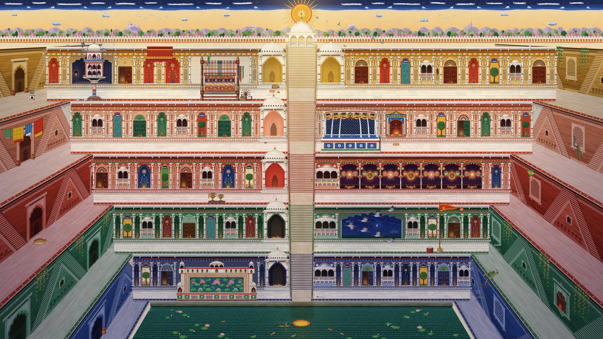

Go down the stepwell to see what I built, from Optmyzr back to my time at NIT Trichy.

I joined Optmyzr as a software engineer in June 2023. I built Sidekick, AI Rule Builder and the Portfolio Management Platform.
I earned my B.Tech at NIT Trichy, led the web team for Pragyan and built campus platforms with Delta Force. Read more in my résumé.